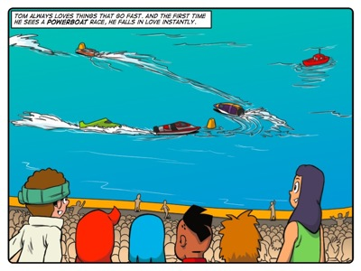
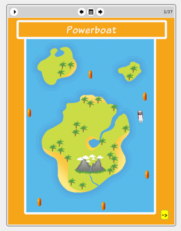

Story: The Powerboat
Theme: Listening to other people's points of view.
Synopsis
After watching a powerboat race, Tom introduces himself to the head engineer of the winning team. He finds out all he can about powerboating and becomes fascinated with the sport. Seeing his enthusiasm, the engineer offers to let Tom work on an old junior powerboat in preparation for a youth race the following weekend. Tom is elated and works tirelessly throughout the week to prepare the boat for racing. But when the race day comes, conditions are completely diffferent from those in which he has tested the boat. Jojo is the driver and tries to dissuade Tom from entering, as he is afraid of losing control of the boat, but Tom refuses to listen to his protests.
This story focuses on the balance between trusting your own judgment and knowing when the time is right to listen to other people's points of view. The powerboat engineer is a role model for Tom. His advice to Tom is to always listen to the facts and to trust his own judgment. Throughout the week Tom heeds his advice. Day after day Tom makes steady improvements to his boat by recording and analysing data from tests. But in the end he is so sure of his own judgment that he fails to take notice of the obvious difference between the conditions in which he tested his boat and the conditions in which Jojo will have to race it.
Good thinkers are confident in their ability to think things through. But they also know when it is valuable to seek other people's opinions. And they do not see this as a weakness in their own abilities. Rather, they see it as a strength that they know when to seek advice.
Activity
This activity challenges learners to sketch their own deisgn for a new kind of bicycle.
The purpose of the activity is to get learners to think of the purpose of a familiar object according to the point of view of the user. The activity sets up the idea that there are many different types of bicycle because different people have different uses for it. That is, different people with different purposes have different points of view on how a bicycle should be designed. With this in mind, we ask learners to think of a new point of view for how a bicycle should be used. With this purpose in mind, they make a sketch of their design.
In doing this activity we want learners to recognise the link between purpose, point of view and design. And that thinking about something from a new point of view can help you to be creative.

The eToys project:
PowerboatIn this project Tom shows learners how to create a powerboat and how to use a steering wheel to navigate the boat around an island. More importantly, Tom shows learners how to create a representation of the powerboat, mapping the movement of the powerboat around the island to the movement of a dot around a small map of the island. The intention of this project is give learners the experience of creating a representation, which is a kind of point of view.